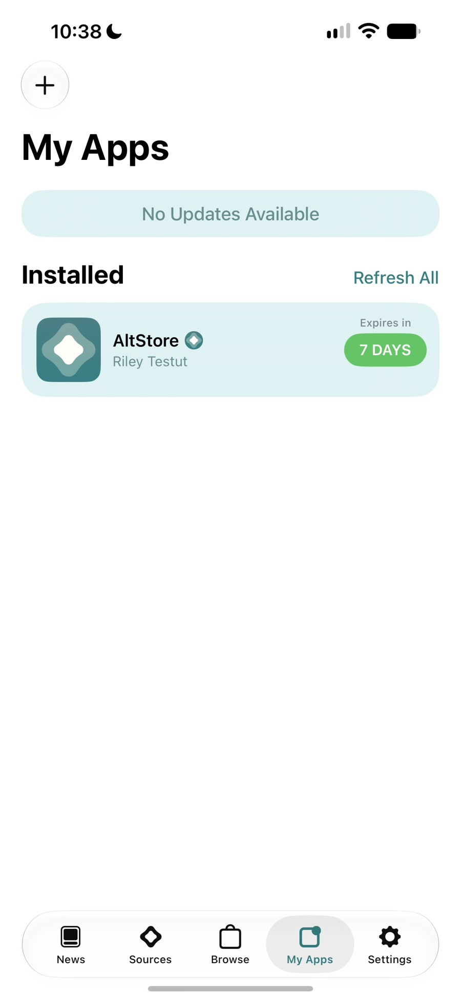

apple blocked altserver twice in a week. i proposed the fix.

sequel to altstore couldn't sign in. apple was sending back an html page. in october 2026 altserver on macos 27 stopped signing in again, first with -80045 and, two days later, with an html page that altserver tried to read as a plist. this is how i traced both, what i measured at apple's edge without credentials, and the fix i proposed. the long version, with diagrams, is in the field report.
tl;dr
- oct 12: every sign-in failed at the first grandslam request with
-80045. altserver on macos 27 generated android anisette data while sending a mac client info. apple started rejecting the mismatch. - oct 14, about 20:50 utc: apple began answering any android client info with a
503html page. altserver showed it as "the data is not in the correct format" (NSCocoaErrorDomain 3840). this also ended the pixel-7 workaround that had worked for a few hours. - what passes: windows anisette data from an anisette v3 server, with the client info and user agent that server reports. the fix signs in that way.
- tested on macos 27.2 with a free apple id with 2fa: sign-in, install of altstore on an ipad pro and an iphone 15 pro max, and a refresh of altstore. not tested: refreshing other sideloaded apps, and no one has confirmed it yet; one user has since reported signing in and reinstalling an app with the build (#1828).
- not universal: some accounts still get
-80045with the windows identity. and on oct 15 jkcoxson published a mac-identity anisette server that, he says, works without patches. i haven't tried it.
the rule that explains both blocks
the anisette data and the X-MMe-Client-Info header must describe the same device. altserver was asking local anisette (android coreadi) and then declaring a mac. that mismatch is block one. block two is apple's edge refusing android outright.
probing the edge without credentials
to separate "the server rejects this identity" from "my login is wrong", i sent credential-less requests to GsService2 with an empty plist body and only the client info changed. they show how the edge routes a request, not whether a login would succeed.
| client info | response | reading |
|---|---|---|
<Pixel 7> <Android;14;…> | 503 html, 6 of 6 | blocked at the edge |
| pixel 5 and pixel 8 variants | 503 html, 6 of 6 | same |
<MacBookPro…> <macOS;27.2;…> akd | 404 / 429 | reaches the service (my ip was rate-limited by then) |
<PC> <Windows;6.2(0,0);9200> itunes | 404 | reaches the service |
the only recipe confirmed after the 503 was the one iloader 2.3.8 and isideload 0.4.6 shipped: windows anisette from an anisette v3 server.
a crash that wasn't the bug
porting the fix meant building altserver with xcode 27. the first build that reached apple crashed on its own: the faulting call was alt_ccsrp_gp_rfc5054_2048, a symbol altsign binds through the flat namespace, and it was undefined in every framework. the swiftpm product AltSign-Dynamic was empty under xcode 27.
$ nm -arch arm64 AltSign.framework/Versions/A/AltSign | grep rfc5054
U _alt_ccsrp_gp_rfc5054_2048rebuilding that one dylib from libcorecrypto_static.a with -force_load removed the crash. it is a build issue, so it is deliberately not part of the pull request.
the fix
six commits, three in altstore and three in altsign. they build on the 2fa fix from altsign#59 and reuse the remote anisette fetcher from altstore#1806.
| before | after | |
|---|---|---|
| anisette | android coreadi, local (anisettekit) | windows adi, anisette v3 server |
| user-agent | fixed authkit string with xcode 26 | the server's user_agent |
| http errors | plist parse error 3840 | readable http status |
your password and 2fa code go directly to apple. the anisette server only sees a device identity.
evidence
installing altstore from the downloaded build worked on an ipad pro and an iphone 15 pro max, and refreshing altstore from the app worked too: 26 requests during an install and 6 during a refresh, all http 200, back to 7 days remaining, one app id used. the 2fa code came from a trusted device, because sms currently fails on apple's side.


what this proves and what it doesn't
- it proves that on my account and network the sign-in, the install and an altstore refresh work with windows anisette, and that apple's edge refuses the android identity.
- it doesn't prove it works for everyone: some accounts still get
-80045with the windows identity, apparently depending on the account or the network. i can't say why. - it depends on a community anisette server, and apple can change the rules again: the first workaround lasted less than a day.
- it isn't the only fix: a mac-identity server published on oct 15 may make the patch unnecessary. untested on my side.
mistakes i made along the way
- reading the first failure as the whole bug. the pixel-7 header fix removed
-80045for a few hours and made it look solved. the 503 was a second, separate block. - blaming the build. the segfault looked like my patch. it was an empty framework from xcode 27.
takeaways
- probe without credentials first. a request with an empty body and one changed header tells you how the edge routes you, and it can't lock your account.
- match identity end to end. anisette, client info and user agent have to come from the same device.
- say what you didn't test. the fix is not merged and not universal, and the write-up and the release say so.
links
- the field report, with timeline and diagrams
- altstore#1834 and altsign#61
- the tracking issue, #1828
- unofficial build, temporary
- the september sign-in writeup